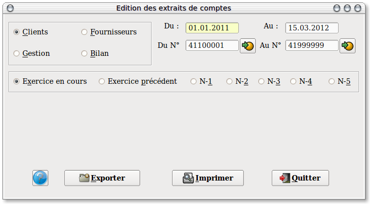

~ Comptabilité Laurux ~

~ Comptabilité Laurux ~ |
|
|
|

A gauche, un panel permet de sélectionner le type de comptes a éditer. Il suffit de cliquer le bouton correspondant à votre choix. ( Ce sont les clients qui sont proposés par défaut)
Par défaut, les dates proposées sont celles du début et de fin de l'exercice en cours. Modifiez ces dates si besoin, sous la forme JJMMAAAA.
Par défaut, également, les comptes de début et de fin sont proposés selon le type d'extrait de compte selectionné
Ex: de 410000 a 4199999 pour les comptes "Client", de 100000 a 9999999 pour les comptes "Bilan".
Enfin, vous pouvez choisir l'exercice a imprimer, (Pour rappel,Laurux conserve 5 exercices en archives) dans ce cas, comme pour l'exercice en cours ou l'exercice précedent, les dates de debut et de fin d'exercice s'affichent automatiquement, et bien entendu ces dates sont modifiables selon vos besoins..
Rappel: Qu'entend-on par exercice en cours et exercice précedent ?
L'exercice en cours est le nouvel exercice, l'exercice précedent étant l'exercice en cours de bilan. Ex: Date de début d'exercice le 01.01.2013. Date de fin d'exercice la 31.12.2013. Nous sommes le 15.04.2014 et la cloture de l'exercice 2013 n'est pas faite. L'exercice en cours concerne l'ensemble des écritures dont la date est supéieure au 01.01.2014. L'exercice précedent concerne les écritures passées entre le 01.01.2013 et le 31.12.2013. L'exercice N-1 concerne les écritures passées entre le 01.01.2012 et le 31.12.2012. Lorsque la cloture de l'exercice 2013 sera faite, il n'y aura plus de notion d'exercice précedent.Si vous souhaitez généer un fichier texte (Pour remettre à votre comptable par exemple)cliquez sur le bouton "Exporter". Cela va copier un fichier "Extraits.txt" sous votre répértoire de travail Laurux.
Pour creer votre rapport d'impression, il suffit de cliquer sur le bouton "Imprimer" pour que le report soit généré et affiché à l'écran.
NB
: Il est possible de lancer le programme de saisie des écritures en
faisant F11. En faisant F12 on lancera le programme de saisie des
écritures de trésorei
----------------------------------------------------------------------------------------------------------------------